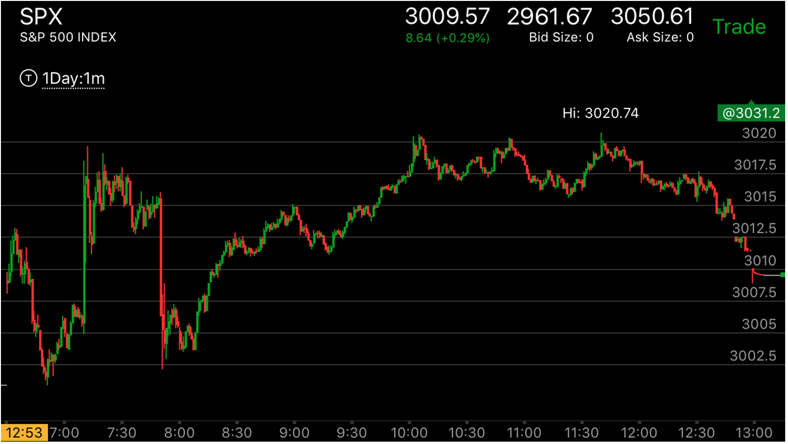
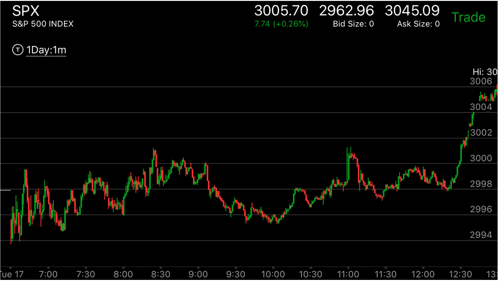

快速拉回后，多段转折创新高，形成部分反转走势或全面反转
- 以上涨为例，在大幅上涨后，快速拉回，然后不断的小幅台阶走高，如果速度比较快，它会创新高，一旦出现了冲高走平的走势，
那么就会出现部分反转，反转的拉回位置在前面第一次快速拉回的地方。
- 这个走势对走势开始的点有很多方法，它应该低于走势的开始，这个是非常严格的。如果它走到走势开始的附近，没有越过就开始反弹。这样意味着大盘会大大超过走势的开始点。可能会利用快速
跨越的方法来越过这个点。这时当然要对大势有所判断。判断大盘是部分反转还是全部反转。无论哪种情况，都应该坚持到走势被全部逆转才可以。
- 不断的跨越走势中，突然出现不再跨越，破坏前面的跨越走势，同时形成了反向加速，然后分为几段的走势连续运动创新高或者新低。
这时大盘会部分或者全部反转。取决于大盘的运动的性质。如果大盘前进的时候一直稳健，有长时间的走平或震荡，那么会部分反转，如果大盘一开始就有很多真空，那么会全面反转。
这时应该反手操作，即使不是全面反转，也是会很大的回调。这个走势的起点有两种，一种是从反转点立刻开始大幅快速运动，好像是一个反向加速走势，其实它是第一浪。这个走势常常会
在走平后，继续前进，然后反向加速，然后继续运动。还有一种头部是，从高点缓慢的运动，然后加速。这个符合一般的头部要求。
- 下跌也有类似的走势

图示：开盘后，出现了两段下跌。但是它的第二段没有加速，就开始创新高。这时应该警惕它可能会涨的很厉害。
应该等它见顶后，做空。因为它的趋势仍然是下跌。可以看到它上涨速度很快，创新高后，走平。这时可以做空。

图示:6：50开始大幅上涨，不到前面高点，快速拉回。可以想到，
它一定会超过高点的。它拉回出现了两段走势。另外6：50的大涨其实是第一浪，这个第一浪很强，不会反转。
然而，它从7：10开始的上涨，上涨幅度不大，但是每次都拉回再次冲高，到了7：40它不再拉回，而是走平。
这样形成了加速。这时它有了新高，完成了新高的任务。而高点走平，又完成了这个走势的加速。形成了部分反转走势。
9：40它快速下跌后，再次出现了强大的第一浪，这个第一浪后，不断的出现了小幅冲拉回。这样再次形成了加速。
这次稍微不同的是，

图示:从8：10开始上涨，9：00拉回，可以观察到，9：10的底部比9：20的底部高，说明这个是故意示弱。会大涨。它然后开始了多段转折的上涨，
创新高。这个转折一定会反转的。它会低于3011一下。虽然它可能未来会大涨。但是当天就是回调花了很多时间，结果到了收盘了。

图示：12:15拉回，它低于前面的走平的点。然后开始缓慢的上涨，每次涨一点就走平很久。这个走势最后没有部分反转，也是一个例外的情况。
但是也许是接近收盘了，时间不够了。

图示：7：40回调到底后，它开始缓慢的上涨，一定会创新高。但是这个上涨的速度很慢。所以未来不会反转。

图示：这个走势在8：10创新高，然后缓慢的下跌。如果把7：30的开始当作一个第一浪，它本来已经到了这个地方。结果它在9：00出现了反弹更高的点。
说明会继续下跌。10：20继续出现了反弹更高点。结果继续下跌。这样，连续两次这次。形成全面反转。

图示：8：20创新高，它立刻拉回，这个冲锋，和8：00的走势形成了两段走势。10：00它低于这个两段走势的起点。然后它的反弹低于9：40的反弹。这样
说明它会继续上涨。


图示：这个走势在盘前不断走高，开盘后，大幅冲高，开盘几分钟后，从新高立刻返回，说明这个不是高点。但是关键在于它会回到哪里。观察盘前走势，
它在9：00是一个走平点。冲高后，这个拉回点恰好是走平点的上沿。这样符合跨越走势。这样3012.5对应的期货3015.它在回调后，继续走高。但是从开盘后的走势看，它上涨很快。不断的跨越。
7：30再次跨越后，上涨。走平。然后大幅拉回。这次它不再跨越。这时就应该警惕起来。它开始出现了几个台阶的上涨，用的时间很短，形成了一个三段走势。这样就开始反转了。8：40开始了下跌的第一浪。
它的速度很快。看起来似乎是下跌的加速走势。其实是下跌第一浪。它走平后，继续下跌。然后反向运动跨越走平点，虽然跨越速度很慢，但是也是一个跨越。9：20从跨越的走平点开始下跌。
应该在这个地方开始做空。由于它要至少返回到8：00这个5浪上涨的起点以下。它其实一直都高于这个点。9：25，它一下就低于这个点了。而且由于前面上涨很快。后面也缺乏支持点。形成了全面反转的走势。